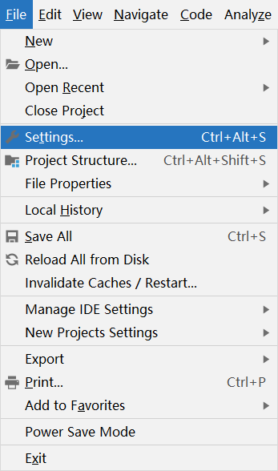
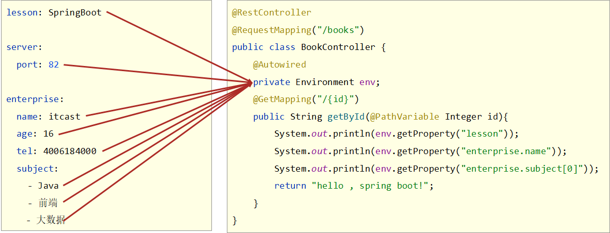
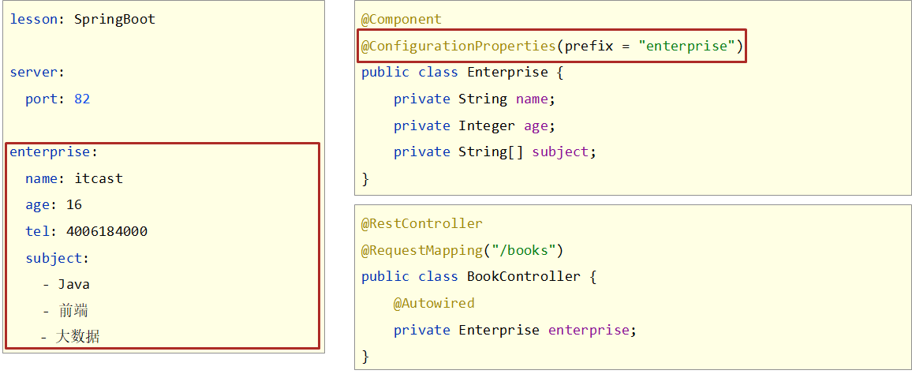
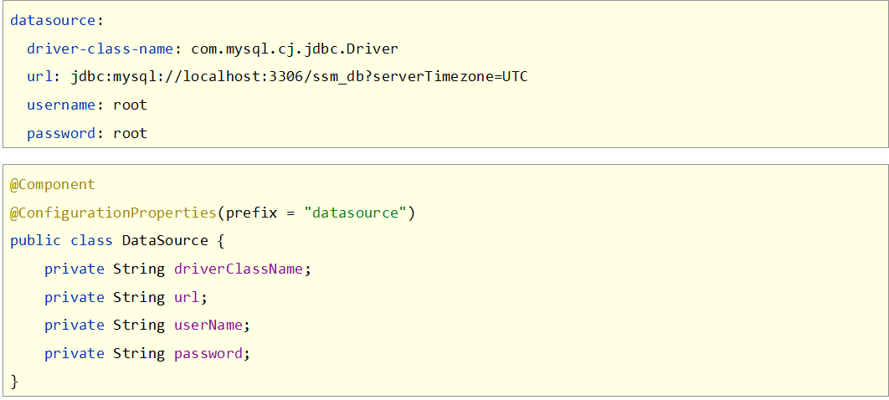

Springboot之基础篇
一、SpringBoot入门程序制作
步骤①：创建新模块，选择Spring Initializr，并配置模块相关基础信息

特别关注：第3步点击Next时，Idea需要联网状态才可以进入到后面那一页，如果不能正常联网，就无法正确到达右面那个设置页了，会一直联网转转转
特别关注：第5步选择java版本和计算机上安装的JDK版本匹配即可，但是最低要求为JDK8或以上版本，推荐使用8或11
步骤②：选择当前模块需要使用的技术集

按照要求，左侧选择web，然后在中间选择Spring Web即可，选完右侧就出现了新的内容项，这就表示勾选成功了
关注：此处选择的SpringBoot的版本使用默认的就可，需要说一点，SpringBoot的版本升级速度很快，可能昨天创建工程的时候默认版本是2.5.4，今天再创建工程默认版本就变成2.5.5了，无需过于纠结，回头可以到配置文件中修改对应的版本
步骤③：开发控制器类
//Rest模式
@RestController
@RequestMapping("/books")
public class BookController {
@GetMapping
public String getById(){
System.out.println("springboot is running...");
return "springboot is running...";
}
} SpringMVC的控制器基于Rest风格开发，当然此处使用原始格式制作SpringMVC的程序也是没有问题的，上例中的@RestController与@GetMapping注解是基于Restful开发的典型注解
关注：做到这里SpringBoot程序的最基础的开发已经做完了，现在就可以正常的运行Spring程序了。
步骤④：运行自动生成的Application类

使用带main方法的java程序的运行形式来运行程序，运行完毕后，控制台输出上述信息。
通过浏览器访问请求的路径，测试功能是否工作正常了
访问路径： http://localhost:8080/books 从开发者角度来看，目前只有两个文件展现到了开发者面前
pom.xml
maven的配置文件，描述了当前工程构建时相应的配置信息
<?xml version="1.0" encoding="UTF-8"?> <project xmlns="http://maven.apache.org/POM/4.0.0" xmlns:xsi="http://www.w3.org/2001/XMLSchema-instance" xsi:schemaLocation="http://maven.apache.org/POM/4.0.0 https://maven.apache.org/xsd/maven-4.0.0.xsd"> <modelVersion>4.0.0</modelVersion> <parent> <groupId>org.springframework.boot</groupId> <artifactId>spring-boot-starter-parent</artifactId> <version>2.5.4</version> </parent> <groupId>com.itheima</groupId> <artifactId>springboot_01_01_quickstart</artifactId> <version>0.0.1-SNAPSHOT</version> <dependencies> <dependency> <groupId>org.springframework.boot</groupId> <artifactId>spring-boot-starter-web</artifactId> </dependency> <dependency> <groupId>org.springframework.boot</groupId> <artifactId>spring-boot-starter-test</artifactId> <scope>test</scope> </dependency> </dependencies> </project>配置中有两个信息需要关注，一个是parent，也就是当前工程继承了另外一个工程，还有依赖坐标
Application类
@SpringBootApplication public class Application { public static void main(String[] args) { SpringApplication.run(Application.class, args); } } 这个类功能很简单，就一句代码，前面运行程序就是运行的这个类
Spring程序相比，SpringBoot程序在开发的过程中各个层面均具有优势
| 类配置文件 | Spring | SpringBoot |
|---|---|---|
| pom文件中的坐标 | 手工添加 | 勾选添加 |
| web3.0配置类 | 手工制作 | 无 |
| Spring/SpringMVC配置类 | 手工制作 | 无 |
| 控制器 | 手工制作 | 手工制作 |
一句话总结一下就是能少写就少写，能不写就不写
总结
开发SpringBoot程序可以根据向导进行联网快速制作
SpringBoot程序需要基于JDK8以上版本进行制作
SpringBoot程序中需要使用何种功能通过勾选选择技术，也可以手工添加对应的要使用的技术（后期讲解）
运行SpringBoot程序通过运行Application程序入口进行
联网创建工程时，网站如果被限制访问，切换选择starter服务路径，然后手工输入阿里云提供的使用地址即可。地址：http://start.aliyun.com或https://start.aliyun.com

二、在Idea中隐藏指定文件/文件夹
步骤①：打开设置，【Files】→【Settings】
步骤②：打开文件类型设置界面，【Editor】→【File Types】→【Ignored Files and Folders】，忽略文件或文件夹显示

步骤③：添加要隐藏的文件名称或文件夹名称，可以使用*号通配符，表示任意，设置完毕即可
总结
- Idea中隐藏指定文件或指定类型文件
- 【Files】→【Settings】
- 【Editor】→【File Types】→【Ignored Files and Folders】
- 输入要隐藏的名称，支持*号通配符
- 回车确认添加
三、SpringBoot简介
SpringBoot是由Pivotal团队提供的全新框架，其设计目的是用来简化Spring应用的初始搭建以及开发过程
Spring程序缺点
- 依赖设置繁琐
- 配置繁琐
SpringBoot程序优点
- 起步依赖（简化依赖配置）
- 自动配置（简化常用工程相关配置）
- 辅助功能（内置服务器，……）
四、REST风格
1、简介
REST（Representational State Transfer）：表现形式状态转换
传统风格资源描述形式
http://localhost/user/getById?id=1 http://localhost/user/saveUserREST风格描述形式
http://localhost/user/1 http://localhost/user优点
- 隐藏资源的访问行为，无法通过地址得知对资源是何种操作
- 书写简化
按照REST风格访问资源时使用行为动作区分对资源进行了何种操作
http://localhost/users # 查询全部用户信息（GET） http://localhost/users/1 # 查询指定用户信息（GET） http://localhost/users # 添加用户信息（POST） http://localhost/users # 修改用户信息（PUT） http://localhost/users/1 # 删除用户信息（DELETE）描述模块名称通常使用复数，也就是加s的格式描述，表示此类资源，而非单个资源
2、例子
@RestController // 相当于@RestsponseBody和@Controller
@RequestMapping("/books")
public class BookController {
@Autowired
private IBookService bookService;
@PostMapping
public Boolean save(@RequestBody Book book){
return bookService.insert(book);
}
@PutMapping
public Boolean update(@RequestBody Book book){
return bookService.modify(book);
}
@DeleteMapping("/{id}")
public Boolean delete(@PathVariable Integer id){
return bookService.delete(id);
}
@GetMapping("/{id}")
public Book getById(@PathVariable Integer id){
return bookService.getById(id);
}
@GetMapping
public List<Book> getAll(){
return bookService.list();
}
@GetMapping("/{currentPage}/{pageSize}")
public List<Book> getAll(@PathVariable Integer currentPage,@PathVariable Integer pageSize){
return bookService.getPage(currentPage,pageSize).getRecords();
}
}
五、基础配置
1、配置文件
SpringBoot除了支持properties格式的配置文件，还支持另外两种格式的配置文件。分别如下:
properties格式
yml格式
yaml格式
application.properties（properties格式）
server.port=80- application.yml（yml格式）常用
server:
port: 81- application.yaml（yaml格式）
server:
port: 82- 3个文件的加载优先顺序是
application.properties > application.yml > application.yaml- 不同配置文件中相同配置按照加载优先级相互覆盖，不同配置文件中不同配置全部保留
2、自动提示功能消失解决方案
指定SpringBoot配置文件
- Setting → Project Structure → Facets
- 选中对应项目/工程
- Customize Spring Boot
- 选择配置文件
3、yaml文件书写风格
对于yaml文件自身在书写时，具有严格的语法格式要求，具体如下：
- 大小写敏感
- 属性层级关系使用多行描述，每行结尾使用冒号结束
- 使用缩进表示层级关系，同层级左侧对齐，只允许使用空格（不允许使用Tab键）
- 属性值前面添加空格（属性名与属性值之间使用冒号+空格作为分隔）
- #号 表示注释
上述规则不要死记硬背，按照书写习惯慢慢适应，并且在Idea下由于具有提示功能，慢慢适应着写格式就行了。核心的一条规则要记住，数据前面要加空格与冒号隔开
下面列出常见的数据书写格式
boolean: TRUE #TRUE,true,True,FALSE,false，False均可
float: 3.14 #6.8523015e+5 #支持科学计数法
int: 123 #0b1010_0111_0100_1010_1110 #支持二进制、八进制、十六进制
null: ~ #使用~表示null
string: HelloWorld #字符串可以直接书写
string2: "Hello World" #可以使用双引号包裹特殊字符
date: 2018-02-17 #日期必须使用yyyy-MM-dd格式
datetime: 2018-02-17T15:02:31+08:00 #时间和日期之间使用T连接，最后使用+代表时区 此外，yaml格式中也可以表示数组，在属性名书写位置的下方使用减号作为数据开始符号，每行书写一个数据，减号与数据间空格分隔
subject:
- Java
- 前端
- 大数据
enterprise:
name: itcast
age: 16
subject:
- Java
- 前端
- 大数据
likes: [王者荣耀,刺激战场] #数组书写缩略格式
users: #对象数组格式一
- name: Tom
age: 4
- name: Jerry
age: 5
users: #对象数组格式二
-
name: Tom
age: 4
-
name: Jerry
age: 5
users2: [ { name:Tom , age:4 } , { name:Jerry , age:5 } ] #对象数组缩略格式4、yaml数据读取
① 读取单一数据
yaml中保存的单个数据，可以使用Spring中的注解直接读取，使用@Value可以读取单个数据，属性名引用方式：${一级属性名.二级属性名……}

记得使用@Value注解时，要将该注入写在某一个指定的Spring管控的bean的属性名上方。现在就可以读取到对应的单一数据行了
总结
- 使用@Value配合SpEL读取单个数据
- 如果数据存在多层级，依次书写层级名称即可
② 读取全部数据
读取单一数据可以解决读取数据的问题，但是如果定义的数据量过大，这么一个一个书写肯定会累死人的，SpringBoot提供了一个对象，能够把所有的数据都封装到这一个对象中，这个对象叫做Environment，使用自动装配注解可以将所有的yaml数据封装到这个对象中
 数据封装到了Environment对象中，获取属性时，通过Environment的接口操作进行，具体方法时getProperties（String），参数填写属性名即可
总结
- 使用Environment对象封装全部配置信息
- 使用@Autowired自动装配数据到Environment对象中
③ 读取对象数据
单一数据读取书写比较繁琐，全数据封装又封装的太厉害了，每次拿数据还要一个一个的getProperties（）,总之用起来都不是很舒服。由于Java是一个面向对象的语言，很多情况下，我们会将一组数据封装成一个对象。SpringBoot也提供了可以将一组yaml对象数据封装一个Java对象的操作
首先定义一个对象，并将该对象纳入Spring管控的范围，也就是定义成一个bean，然后使用注解@ConfigurationProperties指定该对象加载哪一组yaml中配置的信息。
 这个@ConfigurationProperties必须告诉他加载的数据前缀是什么，这样当前前缀下的所有属性就封装到这个对象中。记得数据属性名要与对象的变量名一一对应啊，不然没法封装。其实以后如果你要定义一组数据自己使用，就可以先写一个对象，然后定义好属性，下面到配置中根据这个格式书写即可。

温馨提示
细心的小伙伴会发现一个问题，自定义的这种数据在yaml文件中书写时没有弹出提示，是这样的，咱们到原理篇再揭秘如何弹出提示。
总结
- 使用@ConfigurationProperties注解绑定配置信息到封装类中
- 封装类需要定义为Spring管理的bean，否则无法进行属性注入
④ yaml文件中的数据引用
如果在书写yaml数据时，经常出现如下现象，比如很多个文件都具有相同的目录前缀
center:
dataDir: /usr/local/fire/data
tmpDir: /usr/local/fire/tmp
logDir: /usr/local/fire/log
msgDir: /usr/local/fire/msgDir或者
center:
dataDir: D:/usr/local/fire/data
tmpDir: D:/usr/local/fire/tmp
logDir: D:/usr/local/fire/log
msgDir: D:/usr/local/fire/msgDir 可以使用引用格式来定义数据，其实就是搞了个变量名，然后引用变量了，格式如下：
baseDir: /usr/local/fire
center:
dataDir: ${baseDir}/data
tmpDir: ${baseDir}/tmp
logDir: ${baseDir}/log
msgDir: ${baseDir}/msgDir 还有一个注意事项，在书写字符串时，如果需要使用转义字符，需要将数据字符串使用双引号包裹起来
lesson: "Spring\tboot\nlesson"总结
- 在配置文件中可以使用${属性名}方式引用属性值
- 如果属性中出现特殊字符，可以使用双引号包裹起来作为字符解析
六、整合
代码见本地文件，可提出几个注意事项
1、Lombok
Lombok，一个Java类库，提供了一组注解，简化POJO实体类开发，SpringBoot目前默认集成了lombok技术，并提供了对应的版本控制，所以只需要提供对应的坐标即可，在pom.xml中添加lombok的坐标。
<dependencies>
<!--lombok-->
<dependency>
<groupId>org.projectlombok</groupId>
<artifactId>lombok</artifactId>
</dependency>
</dependencies> 使用lombok可以通过一个注解@Data完成一个实体类对应的getter，setter，toString，equals，hashCode等操作的快速添加
import lombok.Data;
@Data
public class Book {
private Integer id;
private String type;
private String name;
private String description;
}2、MP
用MP的标准通用接口BaseMapper加速开发，别忘了@Mapper和泛型的指定
@Mapper
public interface BookDao extends BaseMapper<Book> {
}温馨提示
MP技术默认的主键生成策略为雪花算法，生成的主键ID长度较大，和目前的数据库设定规则不相符，需要配置一下使MP使用数据库的主键生成策略，方式嘛还是老一套，做配置。在application.yml中添加对应配置即可，具体如下
server:
port: 80
spring:
datasource:
druid:
driver-class-name: com.mysql.cj.jdbc.Driver
url: jdbc:mysql://localhost:3306/ssm_db?serverTimezone=UTC
username: root
password: root
mybatis-plus:
global-config:
db-config:
table-prefix: tbl_ #设置表名通用前缀
id-type: auto #设置主键id字段的生成策略为参照数据库设定的策略，当前数据库设置id生成策略为自增定义MP拦截器并将其设置为Spring管控的bean
@Configuration
public class MPConfig {
@Bean
public MybatisPlusInterceptor mybatisPlusInterceptor(){
MybatisPlusInterceptor interceptor = new MybatisPlusInterceptor();
interceptor.addInnerInterceptor(new PaginationInnerInterceptor());
return interceptor;
}
} 上述代码第一行是创建MP的拦截器栈，这个时候拦截器栈中没有具体的拦截器，第二行是初始化了分页拦截器，并添加到拦截器栈中。如果后期开发其他功能，需要添加全新的拦截器，按照第二行的格式继续add进去新的拦截器就可以了。